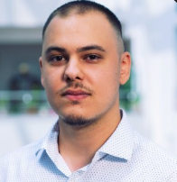

Martin Lucian

Summary:
Education:
- BACHELOR OF ENGINEERING, ELECTRICAL AND ELECTRONIC ENGINEERING- UNIVERSITY POLYTECHNIC OF BUCHAREST
Project: Product separation system according to their size
- Designed and developed an automated sorting system that classifies products by size.
- Implemented control logic using a Schneider programable relay, ensuring efficient sorting operation.
- Made a small-scale model that was controlled by the programable relay.
Work Experience:
- Electronics and Software Engineer
15.07.2025 - Current / Beko Europe
- Maintained and updated existing embedded C code using IAR Workbench for appliance control functions (fan
speed, frequency, temperature regulation).
- Managed tasks and issue tracking using Jira, linking commits to tickets and monitoring project progress.
- Built, compiled, and packaged firmware images, collaborating with colleagues during on-board testing and
validation.
- Used SourceTree and Visual Studio for version control, ensuring a clean and traceable commit history
- Created technical documentation and procedures for multiple control boards, detailing software version
behavior and providing guidance for service technicians to diagnose and resolve product issues.
- Collaborated with the others department to ensure the correct software versions and revisions were released into
production.
- Automation Engineer
01.11.2021 - 15.07.2025 / Beko Europe
- Debugging and automation using CX-Programmer (Omron), Step-7 (Siemens), ZelioSoft (Schneider Electric)
- Repairing the control boards of the converters -Improve the operation of vacuum pumps through preventive
maintenance and the use of gas-ballast filters.
- Programming cobots from Universal Robots.
- Designing a testing station for the cables used for Kobra Schunk ultrasonic welding.
- Programming HMIs.
- Maintenance Engineer
01.07.2021 - 17.09.2021 / Arctic (Internship)
- troubleshooting
- maintenance
- designing and implementing the control part of a hydraulic unit (Project)
- Desk Officer
01.06.2020 - 28.02.2021 / M2C
- Bartender
01.05.2019 - 31.03.2020 / Restaurant Potcoava
Skills:
- Troubleshooting & root cause analysis ⭐️⭐️⭐️⭐️⭐️
- Hardware–software interaction ⭐️⭐️⭐️
- Technical documentation ⭐️⭐️⭐️⭐️⭐️
Languages:
- Romanian ⭐️Mother tongue⭐️
- English ⭐️⭐️⭐️⭐️⭐️⭐️
Certifications:
Contact
- Phone:0792-------
- Email address:martinlucian86@yahoo.com